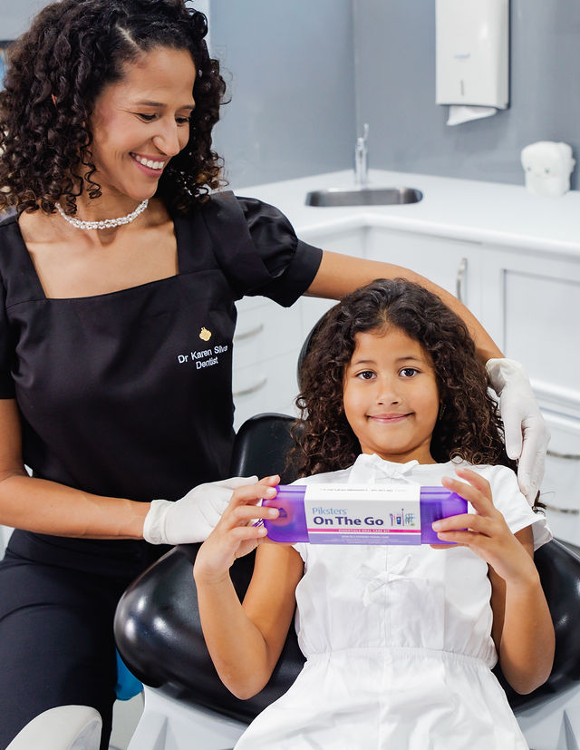
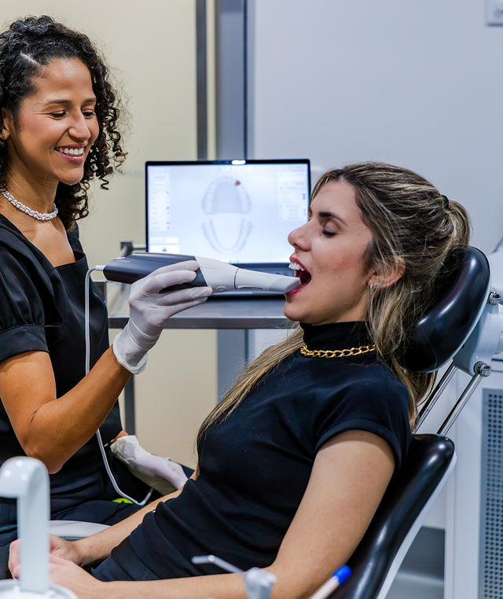
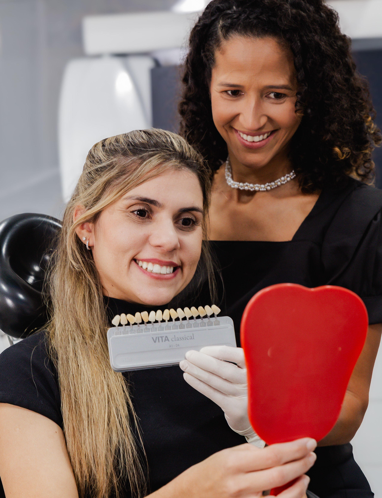
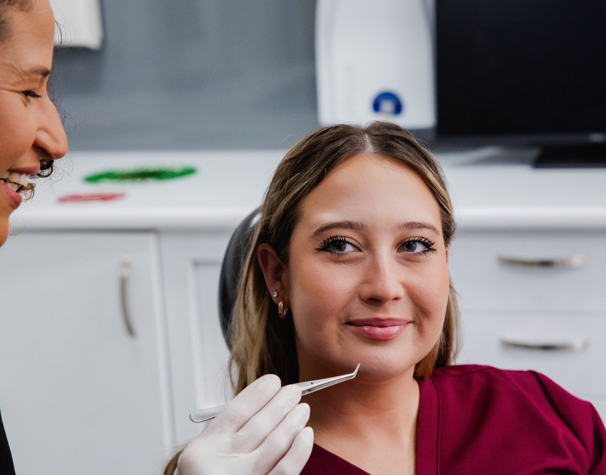
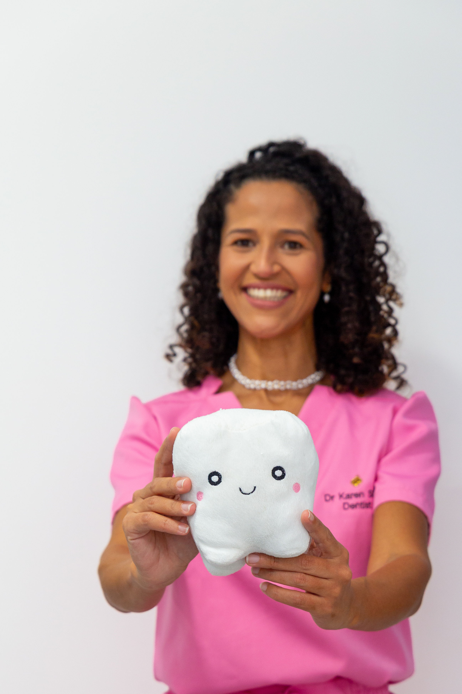
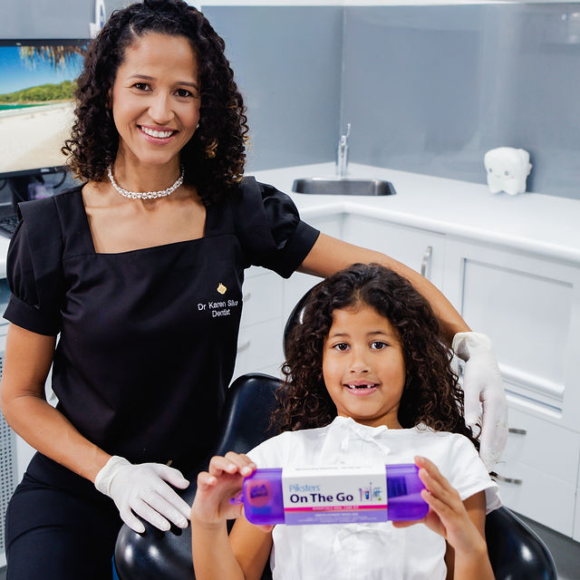

Karen · Dental Care
Dentistry,
personal.
Where clinical precision meets genuine care — a dental experience designed around you.
The Dentist
Choose Your Experience
Select a chapter to discover Karen's approach
Personal Dentistry
Dr Karen Silva
Thoughtful dentistry starts with listening. Every visit is shaped around the person in the chair.
- Practice
- General Dentist
- Where
- Noosaville, Sunshine Coast
- Approach
- Unhurried, patient-first
Book appointment→
02 / 03
CARE✦PRECISION✦CONFIDENCE✦CARE✦PRECISION✦CONFIDENCE✦
Designed around you · 02
Comfort,
reimagined.
A space where advanced dentistry feels calm, considered and completely personal.
360°considered care
01person at the centre
One philosophy
Every Detail Behind
Your Smile

01
Warmth
An unhurried welcome and a calmer experience at every age.

02
Precision
Modern tools support clear planning and considered care.

03
Confidence
Decisions are shared, explained and made together.
Signature care
Every Smile,
Every Stage
01
For every ageGentle Visits
A patient-first experience built on calm communication and trust.
02
PreventionEveryday Care
Thoughtful check-ups and guidance for lasting oral wellbeing.
03
Personal planningSmile Confidence
A collaborative approach to understanding your smile goals.
04
Your first stepConsultation
Time to talk, ask questions and understand the path ahead.
The Clinic · 03
Step
inside.
A calm, considered space from the moment you arrive to the moment you're seated.
Science.
Art.
Care.
02The future of dentistry
still feels deeply human.
Technology
Care in
Clearer Detail
01
Digital Scanning
Clear visual information helps make conversations and planning easier to understand.

Considered Diagnosis
Technology supports attention to detail — never replacing the human judgement behind care.

Visual Consultation
See what Karen sees and take part in every decision about your smile.
Your journey
From First Hello
to Confident Smile
01Conversation
We begin by listening to what matters to you.
02Understanding
A clear look at your needs, without rush or pressure.
03Personal Plan
Options explained simply, with decisions made together.
04Ongoing Care
Support that continues beyond a single appointment.
From Karen's world
Beyond the
Dental Chair

Dr Karen Silva
"The best dentistry begins when someone feels truly seen."
@karenthedentist ↗
K
Ready?
Begin Your
Smile Journey.
Connect directly with Karen to arrange your visit.
Book via Instagram→
No obligation · Personal reply · Appointment details confirmed directly